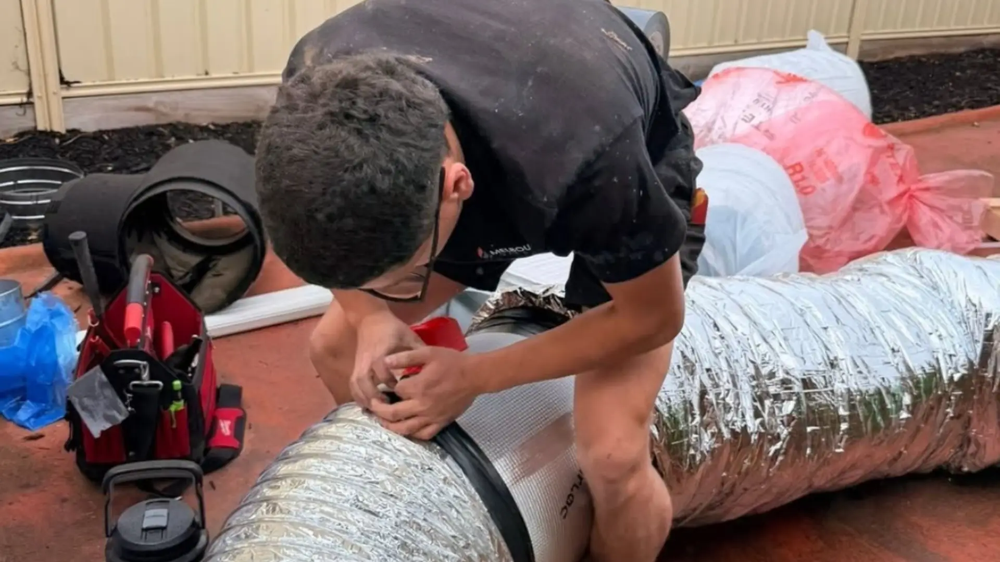

From 100 to 1,000 monthly visitors on brutal plumbing terms.
Plumbing SEO is where search strategies go to get stress-tested. Every plumber wants the
Nexevo Digital is a New York Google Ads agency in the most literal sense: this is where we live, hire and run every campaign from. Search, Shopping and Performance Max for service businesses, measured on booked jobs.
New York is our backyard, and it shows in the campaigns. We know that a plumber in Staten Island and a plumber in Mosman are bidding into completely different auctions, that Westchester and Queens behave like different cities, and that western New York is the hardest-working trades market in the country. Our Google Ads campaigns are built neighborhood by neighborhood around where your jobs actually make money, not sprayed across the metro and hoped for.
One team, the whole metro. From the CBD to the outer west, Queens to Long Island, if your customers are in greater New York, your campaigns are our problem to win. Budgets get weighted to where your profitable jobs actually come from, not sprayed evenly across the map.
Also running in New York: Google Ads and SEO.
A real client, not a projection: JMC Locksmiths went from $84 a lead to $12 inside the first 30 days of a rebuilt account. Your market and margins are different, which is why the audit models your numbers before we forecast anything. What transfers is the structure, and the tracking that proves what it produced.
Being local matters in practical ways too: real conversations in your timezone, a team you can actually meet, and specialists who've spent years watching what New York service businesses pay per click and per lead across dozens of industries. That history is baked into every account we build here.
What should you expect? Honest numbers, fast. Most New York service businesses we take on see lead flow within the first two weeks and a steadily falling cost per lead through the first quarter as the account learns which neighborhoods, services and search terms actually pay. And because we track calls and forms all the way through to booked jobs, you'll know your real return, not a dashboard's version of it.
We live here, hire here and run every campaign from here. New York isn't a market on our list, it's the market we built the agency in.
Prefer a coffee to a video call? Easy. Plenty of our New York clients start exactly that way.
We know what a lead costs across dozens of New York industries, and your account benefits from every bit of it.
No lock-in contract means the results have to re-earn the retainer every single month, which changes how an agency behaves: reports get honest, work gets prioritized by impact, and nobody coasts on a signature from a year ago. It is the accountability structure we would want if we were the client, so it is the one we run.
A strong New York account rarely runs on one campaign type. Depending on your market, yours draws on Search ads for the high-intent searches, Shopping if you sell products, Performance Max with adult supervision, remarketing for the comparers, and display where it genuinely assists. Management is a flat weekly rate on the Google Ads packages page, month to month, and your ad spend goes straight to Google, never through us.
Free and useful either way: we review your account or your market in New York, benchmark the competitors, and hand you a plain-English plan with realistic lead costs and priorities. No jargon, no scare tactics.
The account gets built properly: tight campaign structure, neighborhood-weighted targeting, negative keyword foundations, conversion tracking wired to calls and forms, and landing pages that match the search.
Every week: search terms mined, bids and budgets tuned, ads tested. Every month: a report that ties spend to leads and booked work. Month to month, so the results are what keep the engagement alive.
Plumbing SEO is where search strategies go to get stress-tested. Every plumber wants the

Flowers are one of the most search-driven purchases there is. Nobody plans it three

There are plenty of ways to dress up marketing results, but for a business
What New York business owners ask us most. Anything else, bring it to your free audit.
And if the honest answer for your situation is that Google Ads is not the right first move, we will tell you that too. It is a free conversation, not a sales funnel.
Ask us anythingThe free Google Ads audit shows where you sit in New York today, and what winning your neighborhoods takes.
Get a free Google Ads audit